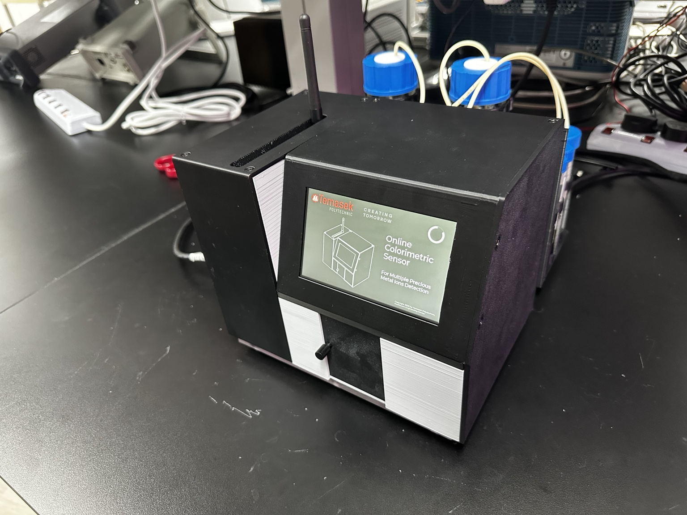
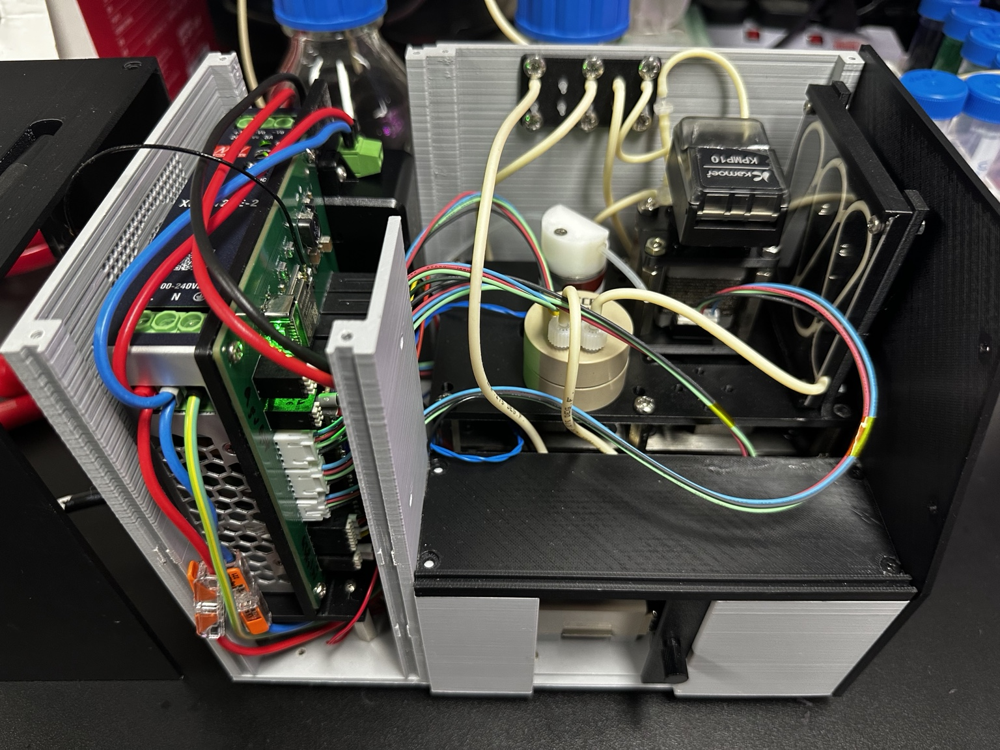
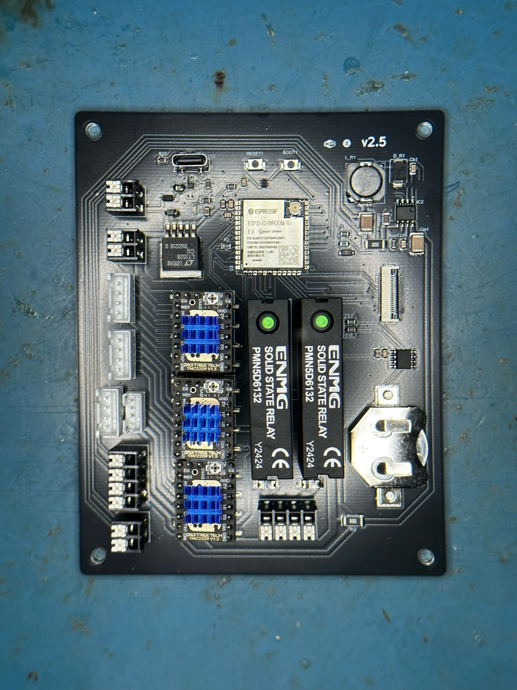
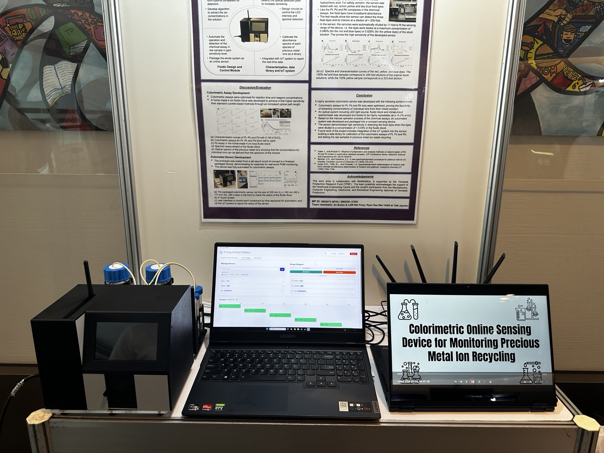

Online Colorimetric Sensor for Precious Metal Ions Detection
An online colorimetric sensor developed for precious metal ions detection, combining mechanical design, electronics, optics, microfluidics and wireless control in one working prototype.
Mechanical
Developed CAD-based mechanical parts, enclosures and supporting structures for the prototype.
Prototype
Fabricated and assembled prototype components using 3D printing and hands-on integration.
Integration
Integrated optical, microfluidic, electronic and mechanical subsystems into a complete sensor platform.
Control
Configured Bluetooth communication for wireless control dashboards and device operation.
Testing
Conducted precision spectral testing and refined the prototype through iterative testing.
Recognition
Presented the project at Temasek Polytechnic's Engineering Tech Show. Shortlisted for the Tan Kah Kee Young Inventors' Award.


